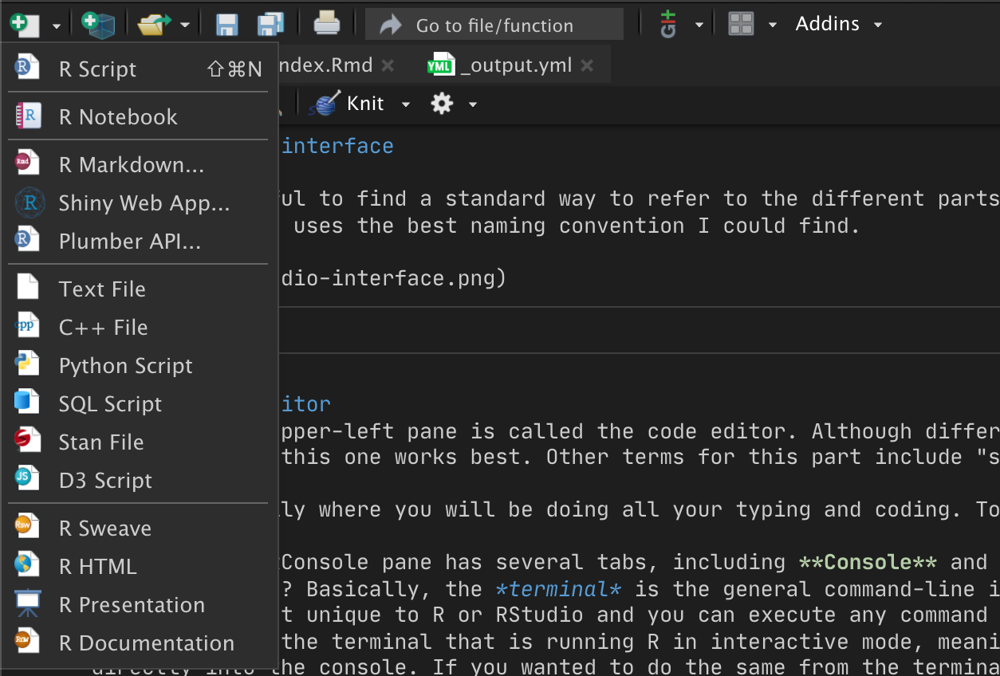
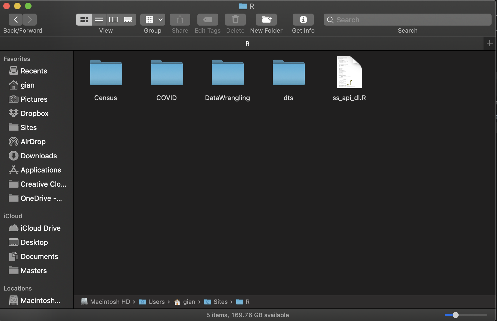

Chapter 2 Introduction to R and RStudio
Now let us introduce the basic things needed for working with R: R and RStudio.
For an introduction of how to download R and how to install RStudio, please refer to this link.
2.1 The RStudio interface
It will is useful to find a standard way to refer to the different parts of the RStudio interface. The following image uses the best naming convention I could find.

2.1.1 The Code Editor
Note that the upper-left pane is called the code editor. Although different people call it by different names, I think this one works best. Other terms for this part include “source editor” or “script editor”.
This is basically where you will be doing all your typing and coding. To create a new R file or script, click on the first button on the top menu-bar and select, for example, new R script.

Once this new file is created, you can start writing your R code!
You can run all of the contents of an R script by clicking on the Run button in the top middle-right, or you can highlight a chunk of code in the code editor and press cmd+Enter to run that piece of code. This is very useful when testing a piece of code without having to run the entire script!
2.1.2 The R Console
The console is used to execute R code directly by typing R commands into it, and it also displays the results of the executed code. Whenever you execute any command from any other part of RStudio, the console will also produce some feedback. The console is basicaly “R in interactive mode”.
Note that the RConsole pane has several tabs, including Console and Terminal. What is the difference between the two? Basically,
The terminal is a general command-line interface that all computers have. It is used for executing commands of many types and is not unique to R or RStudio.
The Console is a subset of the terminal that is running R in interactive mode, which allows you execute R commands directly. If you wanted to use R from the terminal, you would first need to execute a separate command to call and initiate R.
2.1.3 The Workspace and History pane
This pane gives you an overview of your working environment. For one, it tells you how many variables and data objects you currently have loaded into memory. You can click on data objects (such as tables) to view the contents. This is very useful when you import files and save them into R objects. Here is an example of a workspace with some data and variables (values) loaded.
To see on the console all the R objects currently loaded into your R Workspace, use the ls() command
ls()To remove objects from memory, use the rm() command:
#removes all objects
rm(list = ls())
#removes one object
rm(object_name)
#removes multiple objects
rm(c("object1", "object2", "object3"))You can also save the current state of your working environment (all objects etc) so that if you close RStudio and then later you open it again, you can pick up where you left off. To do this:
# save all items in workspace to a .RData file
save.image()
# save specified objects to a .RData file
save(object1, object2, file = "myfile.RData")
# load workspace into current session
load("myfile.RData")However, you don’t really have to this manually as RStudio automatically asks you if you want to save your workspace, and then it reloads the previously saved workspace whenever you open the project again.
2.1.4 The File and Plots (or Miscellaneous) pane
The bottom right pane contains multiple tabs. The Files tab allows you to see which files are available in your working directory. The Plots tab will display any visualizations that are produced by your code. The Packages tab will list all pack- ages downloaded to your computer and also the ones that are loaded (more on this concept of packages shortly). And the Help tab allows you to search for topics you need help on and will also display any help responses (more on this later as well).
2.2 The working directory
Whenever you create a new project, RStudio automatically sets your working directory to that specific folder where you created the project.
What is the working directory and why is it important?
The working directory (wd) is, essentially, the point of reference for the particular project you are working on. The Files pane in RStudio (lower-right pane) will display the files and folders in your current wd. And wenever you want to refer to external files in your R code, your wd will once more be your point of reference and you can use relative file-paths (relative to the wd), as opposed to absolute file paths (would need to type the entire path).
For example, lets say you create a new project called DataWrangling. And in there, you create an RScript called script.R; this is where you are writing your R code. Now lets say you have a CSV file called meals.csv where you are keeping a meal schedule, and you want to manipulate some of that data in R. Well, if you copy the meals.csv file to your working directory, you can access that file using a relative path. For example, to store the contents of the file you would be able to use a command like the following:
mealsFrameRelative <- read.csv('meals.csv')The absolute path for the file would look like this (see how much longer it is):
mealsFrameAbsolute <- read.csv('Users/gian/sites/R/DataWrangling/meals.csv')In order to see your current working directory, use getwd():
getwd()To change it to somewhere else, use setwd():
setwd('path/to/new/directory')The main thing to remember is: each project will have its own working directory, usually the folder where you created the project, but this can be changed with setwd().
If you have a Mac, I suggest that you keep your R projects under User > Sites > R > [ProjectName]
For example, here I have a few projects under my Sites > R directory: 
2.3 R and RStudio tips
2.3.1 Organizing your working directory
Usually, when you start an R projects, you will be working with a variety of different files, often of different types. For example, you have your R scripts which end with the file extension .R. You also likely will use data files such as CSV or Excel or SPSS files. If you write reports, you will also likely have PDF and Word files. A good way to organize all of these files in a logical manner is to, inside of your working directory, create the following folders:
- scripts - to keep your .R and .RMd (markdown) files.
- data - to keep all your data files that you will use to work with.
- reports - to keep your output documents and reports.
This is how it would look in practice, if I have a project called DataWrangling and I have the previously mentioned folder structure:
2.3.2 Other ways to use R
Even though RStudio is the main and preferred way to interact with R, it is not the only way.
Once R is installed, it can be run from the Mac/Windows terminal using the command R, which will trigger the interactive mode and you will be able to type R commands. This is useful to remember because you can also type
R myScript.RFrom the terminal and it will automatically execute whatever code you have in the file called myScript.R. In the programming world, we call this working from the command line (meaning, working without an interface, directly into the terminal or console).
Also remember, to write R code (or any programming language), all you need is a text editor. You don’t need to use RStudio to write R, although it is preferred, and you can view/edit R files with the default text editor, or more specialized coding-oriented text editors such as VS Code. Whatever you use to write R code, you can later open it and edit it with RStudio if you prefer. This is a useful tip if you ever have to write R in a computer that does not have RStudio installed. Just remember to save the file with the .R extension.